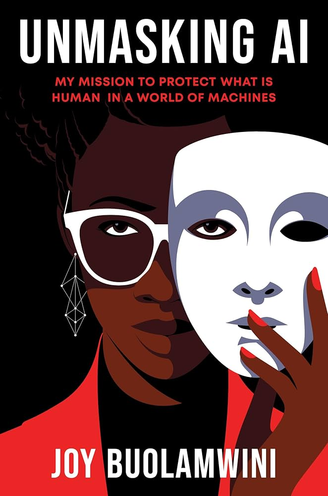

Update as of Oct. 31
As of October 31, I have read up to page 190 of the book. So far, the material feels quite repetitive, with few genuinely new ideas emerging. Much of the content I have read since my last update on October 21 centers on the author’s repeated efforts to persuade both the audience and other stakeholders that race is a crucial factor to consider in the development and programming of artificial intelligence and large language models. The author emphasizes that ignoring racial considerations can lead to biased outputs and inequitable consequences, but this argument is presented multiple times in slightly different ways, which contributes to the sense of redundancy. While the points are important, the lack of new perspectives or examples in this section makes the reading feel somewhat monotonous.
I am also hoping that the author will begin to address some of the questions she poses to the reader. These questions are consistently thought-provoking and encourage deeper introspection, prompting readers to reflect on the broader implications of her arguments. Additionally, a recurring theme throughout the book is the skepticism and pushback she faces from companies and technology giants who repeatedly doubt her findings and attempt to discredit her work. I greatly admire her optimism and determination in advocating for marginalized voices, and it is precisely this kind of rigorous, principled work that the world needs more of.
Questions and Answers
1) Why might Dr. Buolamwini have chosen to focus so heavily on proving that racial bias in AI exists, rather than moving quickly toward solutions? Dr. Buolamwini likely prioritized proving the existence of racial bias first because establishing the problem is essential before proposing solutions. Without credible, well-documented evidence, efforts to implement change could be dismissed or ignored by corporations and policymakers. By rigorously demonstrating bias through studies like Gender Shades, she creates an irrefutable foundation that demands attention, ensuring that any subsequent solutions are taken seriously and grounded in data rather than anecdote.
2) How does Buolamwini’s “Gender Shades” study challenge the credibility of major tech companies and their approach to AI ethics? The Gender Shades study exposed that facial recognition systems from major tech companies performed significantly worse on darker-skinned women compared to lighter-skinned men. This revealed a critical blind spot in supposedly “neutral” AI systems, undermining the companies’ claims of technological competence and ethical responsibility. By providing empirical evidence of biased outcomes, the study calls into question both the rigor of AI testing practices and the sincerity of corporate commitments to fairness and inclusion.
3) What does the corporate reaction to Buolamwini’s findings at the Conference on Fairness, Accountability, and Transparency reveal about the tech industry’s priorities and discomfort with criticism? The dismissive or defensive responses from some tech representatives highlight an industry more focused on reputation, profit, and innovation metrics than on confronting uncomfortable truths. The pushback suggests that admitting bias threatens their public image and business interests, revealing a resistance to accountability and a discomfort with criticism that challenges their authority. It underscores a broader tension in tech: ethical considerations are often secondary to performance claims and market dominance.
4) How can data transparency laws empower individuals who are misclassified or harmed by biased algorithms? Data transparency laws can give individuals insight into how algorithms make decisions about them, including the factors influencing classification or scoring. This access allows people to identify errors, challenge unfair outcomes, and demand corrections or compensation. Transparency also pressures organizations to audit, refine, and document their systems responsibly, creating a feedback loop that reduces harm and empowers users to hold companies accountable.
5) What types of government regulation or corporate accountability structures could effectively address racial bias in AI? Effective measures could include:
- Mandatory bias audits: Independent assessments of AI systems before deployment to detect discriminatory patterns.
- Algorithmic impact assessments: Requiring companies to evaluate the social consequences of AI applications, similar to environmental impact reports.
- Legal liability frameworks: Holding companies legally accountable for harm caused by biased AI decisions.
- Data diversity standards: Ensuring training datasets are representative of all demographic groups.
- Transparency and reporting requirements: Requiring companies to publicly disclose algorithmic performance metrics, particularly regarding fairness and error rates across demographics.
Together, these measures could create both deterrence against negligence and incentives for proactive fairness in AI development.
Questions for Next Book Blog
- How does the author’s personal experience shape the way she frames the problem of bias in AI?
- Are there any examples in this section where racial or gender bias in AI had real-world consequences? How are these illustrated?
- What patterns or repeated arguments do you notice in the author’s approach? Do they strengthen or weaken her overall message?
- How does the author balance technical explanations with accessibility for a general audience?
- Are there moments in this section where the author begins to suggest potential solutions or interventions? How convincing are they?